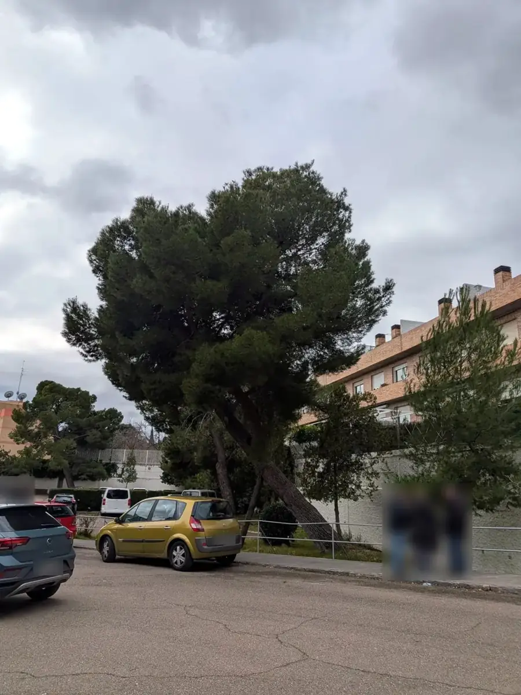
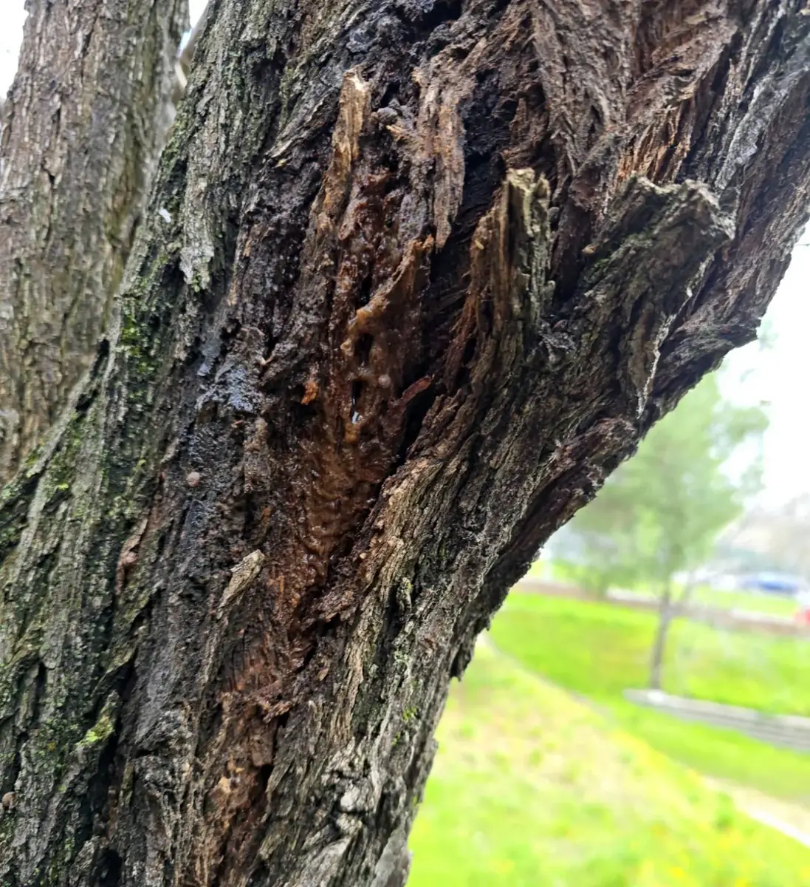
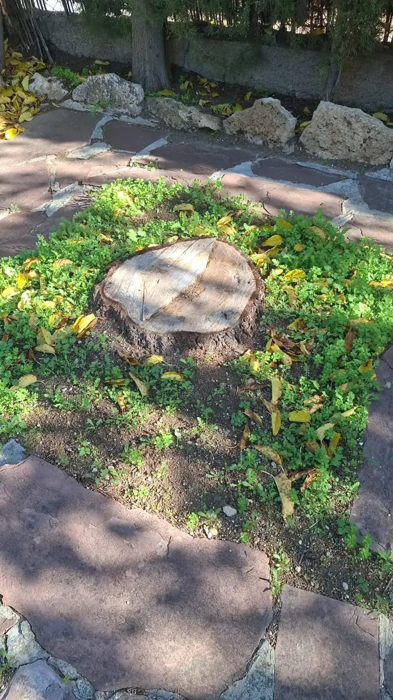
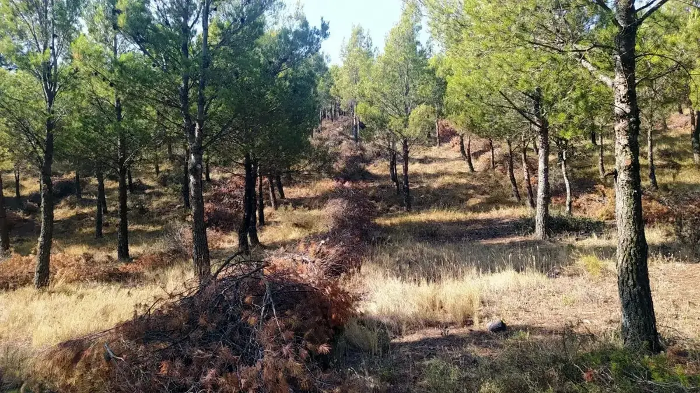

Su jardín, sus árboles y su finca, en buenas manos
Jardinería, poda, tala y desbroce en Zaragoza y alrededores, para chalets, comunidades y fincas rústicas. Nos ocupamos de todo: desde pedir los permisos hasta llevarnos los restos.

Usted se despreocupa. Si el trabajo necesita permiso del ayuntamiento o de Medio Ambiente, lo tramitamos nosotros, y al terminar dejamos la zona limpia.
Servicios
De forma periódica o para un trabajo puntual.
Mantenimiento de jardines
Siega, setos, riego y limpieza con visitas programadas. También plantación y reforma de zonas del jardín.
Ver el servicio →
Poda y arboricultura
Poda de formación, de limpieza y en altura. Revisamos si el árbol tiene grietas, pudriciones o ramas con riesgo.
Ver el servicio →
Tala y destoconado
Tala controlada de árboles junto a casas, muros o cables, y retirada del tocón para recuperar el espacio.
Ver el servicio →
Desbroce y prevención de incendios
Desbroce de parcelas y fincas para cumplir la normativa y reducir el riesgo de incendio.
Ver el servicio →Urgencias y trabajos exprés
Cuando algo no puede esperar, avísenos. Si es posible, vamos el mismo día.
- Árboles o ramas que pueden caer tras un temporal.
- Recogida rápida de restos de poda o de ramas caídas.
- Poda o tala que no puede esperar por seguridad.
- Puesta a punto del jardín antes de una fecha señalada.
Cómo trabajamos
Una sola persona de contacto
Habla siempre con la misma persona, del presupuesto al final del trabajo.
Trabajo seguro
Poda en altura y talas con técnica y equipo de seguridad, protegiendo su casa y sus árboles.
Presupuesto claro
Antes de empezar le decimos qué vamos a hacer y cuánto cuesta. Sin sorpresas.
Zona de servicio
Zaragoza capital y las urbanizaciones y pueblos de alrededor. Si no sabe si llegamos a su zona, pregúntenos sin compromiso.
Hablemos de su jardín
Cuéntenos qué necesita y dónde, y le preparamos un presupuesto sin compromiso. Si nos manda una foto, mejor.
Calle Riglos 9, 50012 Zaragoza (España)